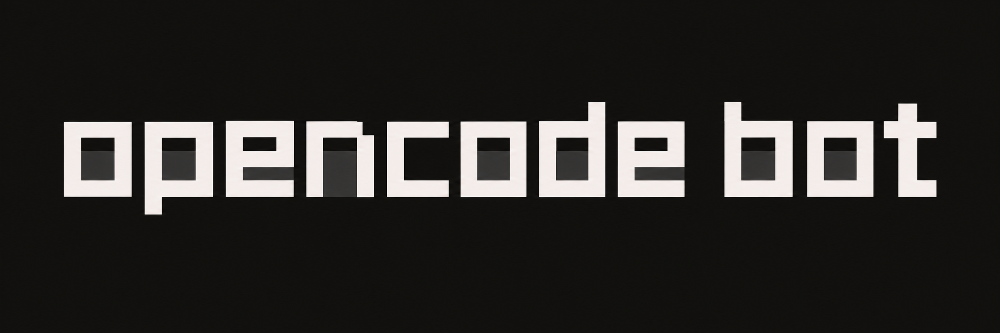

A bot for each job.
Give each bot its own instructions, model, and skills. Start as many conversations as the work needs. Bots can ask one another for help.

A name. A job. A browser of their own.
Put OpenCode to work in a workspace you host—and take the conversation with you.
Make a little website for our weekend in the Catskills. Ask Builder to put it together.
I’ll collect the stops and ask Builder to turn them into a field guide.
The guide is ready. Opening it in our browser.
Ready when you are. Take a look →
The browser your bots actually control.
OpenCode does the work. Bot gives it a place to live.
Give each bot its own instructions, model, and skills. Start as many conversations as the work needs. Bots can ask one another for help.
Read tool calls as they happen. Expand the shared browser. Review approvals, send a follow-up mid-turn, or stop a task.
Connect model providers and API keys. Use OpenCode commands, install skills, and configure plugins for the way you work.
Chat on the web or connect a Telegram bot. Pair another client with a code or QR. Native iOS and Android clients are in preview.
Attach a reference image or document. Browse the Computer’s folders, preview text, and upload or download the finished work.
Connect an external agent through authenticated MCP. List bots, start tasks, and follow results without opening another chat window.
MCP setup ↗Start with a Computer on your Cloudflare account. Add a Mac, Linux machine, or Windows computer with the node installer and a pairing token.
One workspace connects your bots and trusted clients. Revoke a paired device when it’s no longer yours.
Meet the node system ↗The installer deploys to your Cloudflare account and opens your workspace.
No local Docker. No Docker Hub account.
curl -fsSL https://raw.githubusercontent.com/pkyanam/opencode-bot/main/install.sh | bashBash, curl, Git, and a Cloudflare account with Workers Paid, Containers access, and R2 enabled. Setup installs Node.js 24+ when needed and prompts for Cloudflare login. Hosting and models are billed separately by their providers.
No. OpenCode Bot is an independent, open-source project built on OpenCode. OpenCode’s name and logo belong to their respective owners.
The web workspace, Telegram integration, model configuration, bot conversations, live Computer browser, file tools, pairing, and MCP are available in the public preview. Native mobile is a development preview, not an App Store or Play Store release. Additional-node desktop streaming and native desktop packaging are still in development.
Your control server and artifacts live in your Cloudflare account; model requests go to your configured provider. Bots sharing a Computer also share its files, browser, and credentials. Cloudflare Sandbox disk is temporary: save checkpoints for recovery, and keep important files backed up. Checkpoints currently have a 32 MiB compressed limit.
Updates are available in Settings after you configure deployment access. The setup utility also includes an uninstaller with a resource preview before deletion.
Uninstall instructions ↗